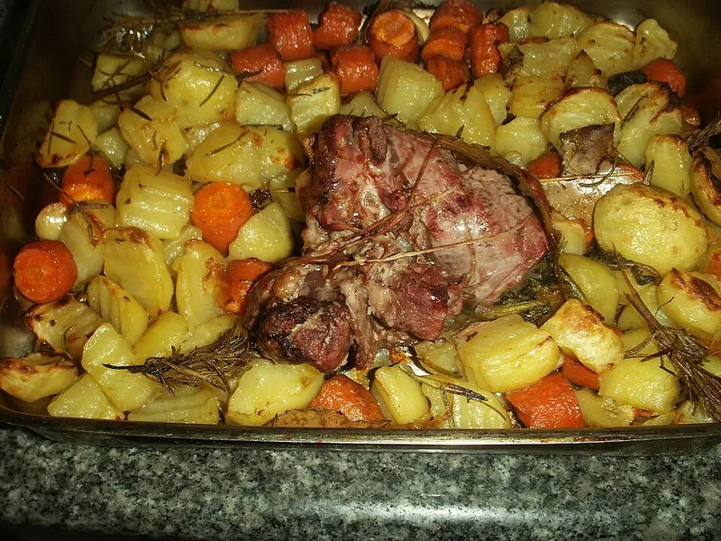

Main主菜 · Greek / Mediterranean希腊/地中海
Greek Roast Leg of Lamb with Lemon Potatoes希腊烤羊腿
A centrepiece for guests. Lamb marinated with lemon, garlic, oregano and olive oil roasts slowly over potatoes, which soak up the lamb fat and lemon juices and turn golden.周末聚会的主角。羊腿用柠檬、大蒜、牛至和橄榄油腌过，铺在土豆上慢烤，烤出的羊油和柠檬汁把土豆浸得金黄。

Ingredients食材
- Leg of lamb羊腿 2200 g · bone-in leg of lamb, about 2.2 kg (half a leg)带骨羊腿约 2.2 公斤（半只） thaw overnight in the fridge if frozen提前一晚从冷冻移到冷藏解冻
- Potatoes土豆 1000 g · 6 medium potatoes, cut in 4 cm chunks6 个中等土豆，切 4 厘米块
- Lemons柠檬 200 g · juice of 2 lemons (about 100 mL) and some zest2 个柠檬的汁（约 100 mL）和皮屑
- Garlic大蒜 30 g · 8 cloves: 4 sliced to insert in the meat, 4 crushed8 瓣，4 瓣切片插进肉里，4 瓣磨泥
- Extra virgin olive oil橄榄油 60 g · 4 tbsp (60 mL)4 汤匙（60 mL）
- Dried oregano干牛至/香草 6 g · 2 tbsp dried oregano2 汤匙干牛至
- Rosemary迷迭香 3 g · 1 tbsp dried rosemary1 汤匙干迷迭香
- Salt盐 12 g · about 2 tsp约 2 茶匙
- Black pepper黑胡椒 2 g · 1 tsp1 茶匙
- Onions洋葱 150 g · 1, in thick rings for the base1 个，切厚圈垫底
Weights are as bought, before trimming or peeling. Costco pack sizes and availability vary; see each ingredient page.重量为买回来的原重（去皮去骨之前）。Costco 规格与有无随时变化，点食材名看详情。
Method做法
- Take the lamb out of the fridge an hour ahead and pat it dry.羊腿从冰箱取出，回温 1 小时，用厨房纸擦干。
- With a small knife, stab 12 holes about 2 cm deep in the leg.用小刀在羊腿上戳 12 个深约 2 厘米的小孔。
- Push a slice of garlic into each hole.每个孔里塞一片蒜。
- Mix the crushed garlic, olive oil, lemon juice, oregano, rosemary, salt and pepper into a paste.蒜泥、橄榄油、柠檬汁、牛至、迷迭香、盐和黑胡椒混合成腌酱。
- Rub it all over the lamb and marinate 2 hours at room temperature, or overnight in the fridge.把腌酱涂满羊腿，腌 2 小时（室温）或冷藏过夜。
- Preheat the oven to 220°C (425°F).烤箱预热到 220°C（425°F）。
- Spread the onion rings in a roasting pan and scatter the potatoes around them, tossed with 1 tbsp oil and 1 tsp salt.烤盘铺洋葱圈，土豆块拌 1 汤匙橄榄油和 1 茶匙盐铺在周围。
- Set the lamb on the onions, or on a rack above the potatoes.羊腿放在烤架上，置于土豆上方或直接放在洋葱上。
- Roast 20 minutes to brown.放入烤箱烤 20 分钟定色。
- Reduce to 160°C (325°F), add 250 mL water to the pan and roast 2 more hours.把温度降到 160°C（325°F），倒入 250 mL 水到烤盘，再烤 2 小时。
- Check the thickest part with a probe: 63°C for pink and juicy, 77°C or more for fall-apart tender.用肉温计插到最厚处：粉红偏熟 63°C，全熟软烂 77°C 以上。
- Rest the lamb loosely covered with foil for 15 minutes, and return the potatoes to a hot oven for 10.取出羊腿盖锡纸静置 15 分钟，土豆留在烤箱里用高温再烤 10 分钟。
- Carve the meat along the bone and serve with the potatoes and the pan juices.沿骨头切片，配土豆和烤盘里的汁。
Keys to success成功要点
- Bring the lamb to room temperature; a cold leg cooks unevenly.烤之前一定让肉回温，冷肉进烤箱外面熟了里面还凉。
- A probe thermometer is the best tool here: about 63°C is pink and juicy, 77°C and higher is the soft Greek style.肉温计是这道菜最值得的工具：约 63°C 是粉红多汁，77°C 以上才是希腊式的软烂。
- A bed of onions keeps the lamb off the pan and flavours the juices.烤盘里放洋葱垫底，肉不会煳底，汁也更香。
- Rest 15 minutes before carving so the juices stay in the meat.静置 15 分钟再切，肉汁才不会流光。
Common problems常见失败与补救
- Dark outside, raw inside表面煳了里面还生
Tent with foil and keep roasting; next time temper the lamb properly and shorten the browning stage to 15 minutes.表面太黑时盖锡纸继续烤；下次回温充分，并把定色时间缩到 15 分钟。 - The meat is dry肉太干
Use a probe and stop by 77-80°C, keep some water in the pan, and spoon pan juices over the slices.用肉温计控制，别超过 77–80°C；烤盘里始终留一层水；切片后淋上盘底汁。 - The potatoes are neither crisp nor cooked土豆不脆也不熟
Cut them at 4 cm and, once the lamb is out, give them 10 minutes alone at 220°C.土豆切小一点（4 厘米），最后把羊腿取出后用 220°C 单独烤 10 分钟。
Watch it done视频参考
A Greek-style roast leg of lamb in about eight and a half minutes with over two million views; one of the fuller English walkthroughs.希腊式整只羊腿烤法，约 8.5 分钟，两百多万播放，是英文里讲得比较完整的一支。
Lemon roast lamb with potatoes in under six minutes; a good first look at the overall process.柠檬烤羊肉配土豆，不到六分钟，适合先看一遍整体流程。
Videos load only when you tap them (youtube-nocookie). Creators are credited; we do not host their videos.点了才加载视频（youtube-nocookie）。署名原作者，本站不托管视频。
Nutrition营养
| Energy热量 | 663 kcal |
| Protein蛋白质 | 63.6 g |
| Fat脂肪 | 29.3 g |
| of which saturated其中饱和脂肪 | 9.9 g |
| Carbohydrate碳水化合物 | 35.5 g |
| Fibre膳食纤维 | 4.4 g |
| Sodium钠 | 977 mg |
High sodium钠偏高 Sodium tiers: under 345 mg lower, 345-689 mg moderate, 690 mg and above high (this site's tiers; 15% of the 2,300 mg daily reference = 345 mg).钠分档：低于 345 mg 较低，345–689 mg 中等，690 mg 及以上偏高（本站分档；345 mg ＝ 每日参考 2300 mg 的 15%）。
Computed from the Canadian Nutrient File (Health Canada) with the weights above; oil and sauces are counted in full. Real dishes differ.按加拿大营养素数据库和上面的重量计算；油和酱汁按全量计入，实际会略低。
Good to know适合 / 需注意
- About 63.6 g protein per serving, a protein-rich meal (adult reference intake roughly 50-60 g/day; needs vary).每份蛋白质约 63.6 g，属于蛋白质较高的一餐（成人每日参考量约 50–60 g，个体差异大）。
- About 977 mg sodium per serving (about 42% of the 2,300 mg daily reference), on the high side; use less soy sauce or salt, and pair with unsalted sides.每份钠约 977 mg（约占每日参考 2300 mg 的 42%），偏高；少放酱油或盐，或搭配无盐主食与蔬菜。
- About 9.9 g saturated fat per serving (daily reference about 20 g), on the high side; use a leaner cut or remove skin.每份饱和脂肪约 9.9 g（每日参考约 20 g），偏高；可换瘦肉部位或去皮。
Red meat and potatoes give plenty of protein, with real amounts of saturated fat and energy too. Weights include the bone, so trimming the fat cap at the table lightens it.红肉和土豆的组合，蛋白质充足，饱和脂肪和热量也不低；六人份已把羊腿骨头算在内，吃的时候去掉肥边会更轻。